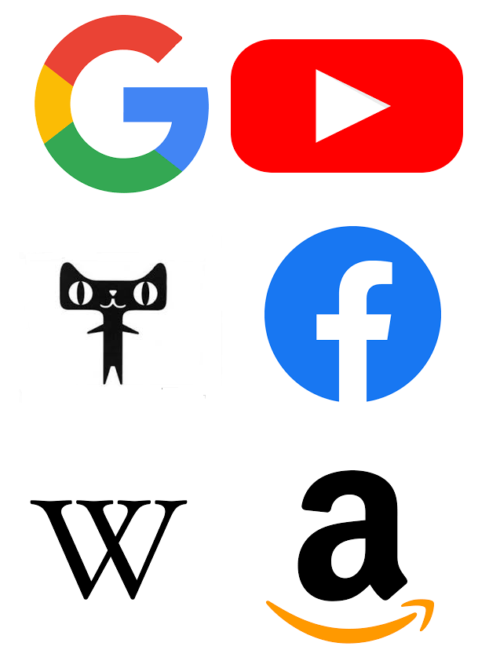

FROM

TO
Ready to make your website stand out? Let's create a custom favicon for your site!
How?? Just upload an image or drag and drop in onto the page, then convert it into a favicon with one click!
Instructions:
- Select an image file (GIF, JPEG, JPG, PNG).
- Max file size: 50MB.
- Click **Upload** to save the image.
- Choose an image size, or choose multiple sizes for more compatibility.
- Click **Convert to ICO** to generate your favicon.
- Check out the preview
- Like what you see? Click Download!!
Icon
ICO is a file of this format usually contains a small image icons of different resolutions (16x16, 32x32, 64x64 pixels) and various color depths (16 colors, 32, 64, 128, 256, 16-bit, and so on). Used to display files and folders in the graphical user interface (GUI) operating systems.
.Png
A .png file is a Portable Network Graphic file, a raster image format that supports lossless data compression. PNGs are commonly used for web graphics, logos, and illustrations.
.jpeg
A .jpeg is a file extension for a Joint Photographic Experts Group (JPEG) file, a common format for storing and sharing digital images. JPEG files are compressed to reduce their file size, making them easier to store and load on the web.
.gif
A .gif (Graphics Interchange Format) is a widely used image format that supports both static images and animated images. A .gif image file is commonly used on the web to display graphics and logos. These files also support basic animation, which means they’re a popular file format for memes on social media sites.